pr1-ud6-espaciado
Antes de la modificación:
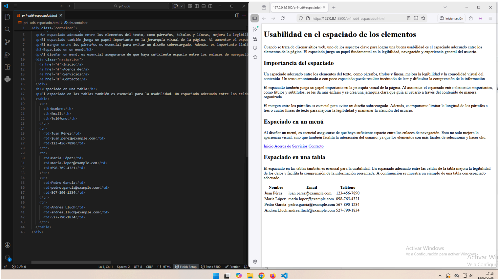
Después de la modificación:
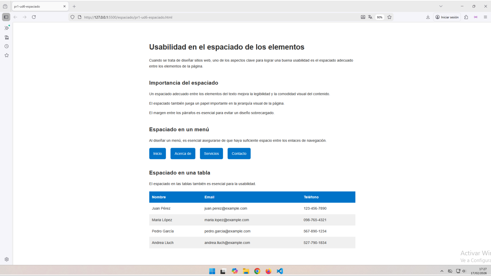
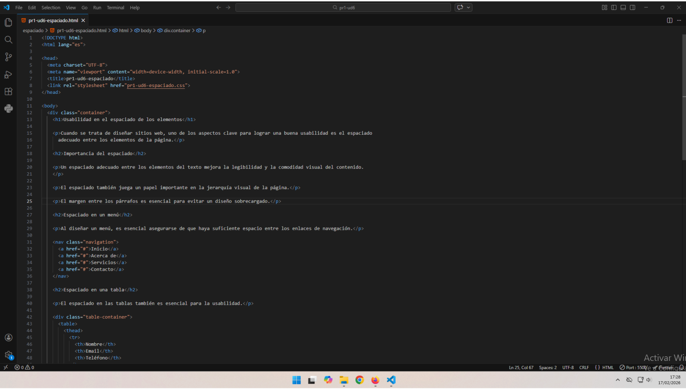
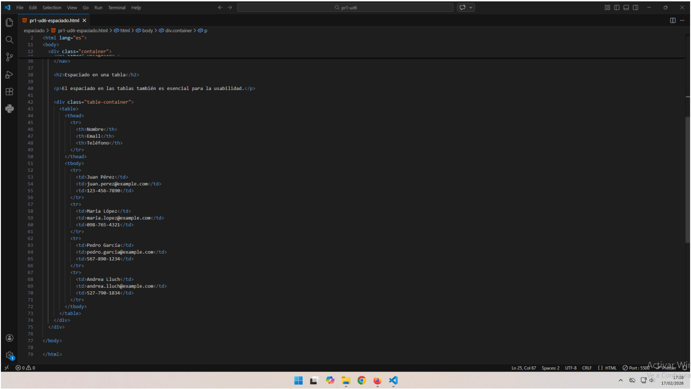
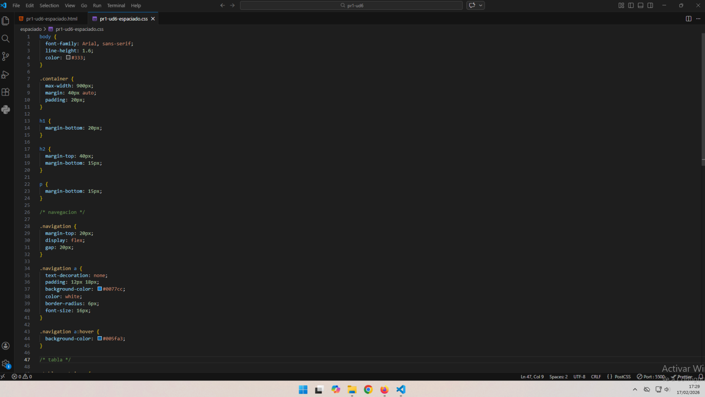
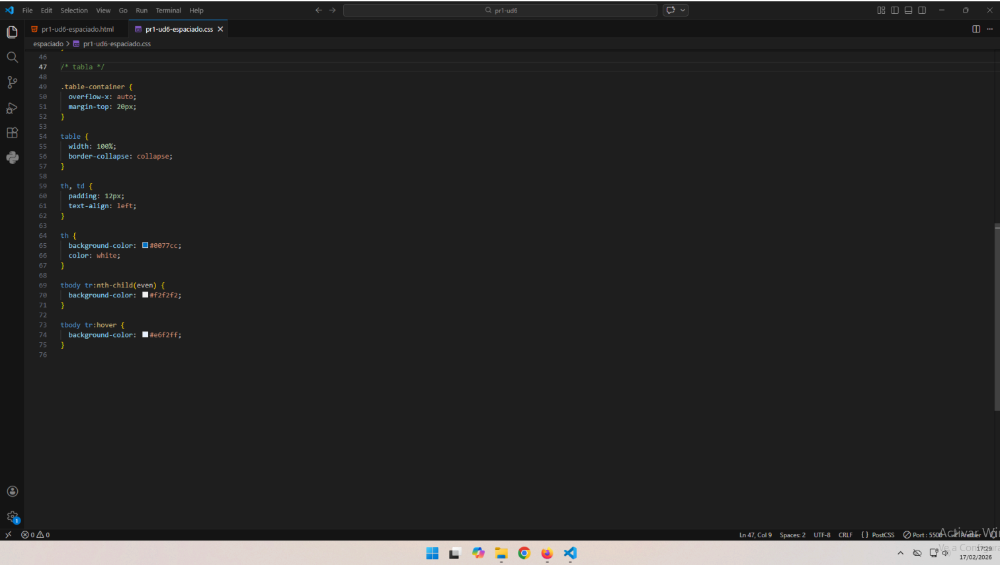
Modificaciones realizadas:
- Se han ajustado los márgenes para mejorar la distribución del contenido.
- Se ha limitado el ancho de las líneas de texto para facilitar la lectura.
- Se ha incrementado el interlineado para reducir la carga visual y mejorar la comprensión.
- El menú de navegación utiliza
display: flex con gap para asegurar un espaciado uniforme entre los enlaces.
- Los enlaces se han transformado en botones con
padding, color de fondo y bordes redondeados para facilitar la experiencia del usuario.
- Se ha aumentado el área clicable de los enlaces, mejorando la usabilidad en dispositivos táctiles.
- Se ha añadido un efecto
hover que proporciona feedback visual al usuario durante la interacción.
- Se ha aplicado zebra striping para facilitar el seguimiento visual de las filas y mejorar la lectura de los datos.
- Se ha adaptado el diseño para que sea completamente responsive, garantizando correcta visualización en distintos dispositivos.
pr1-ud6-form
Antes de la modificación:
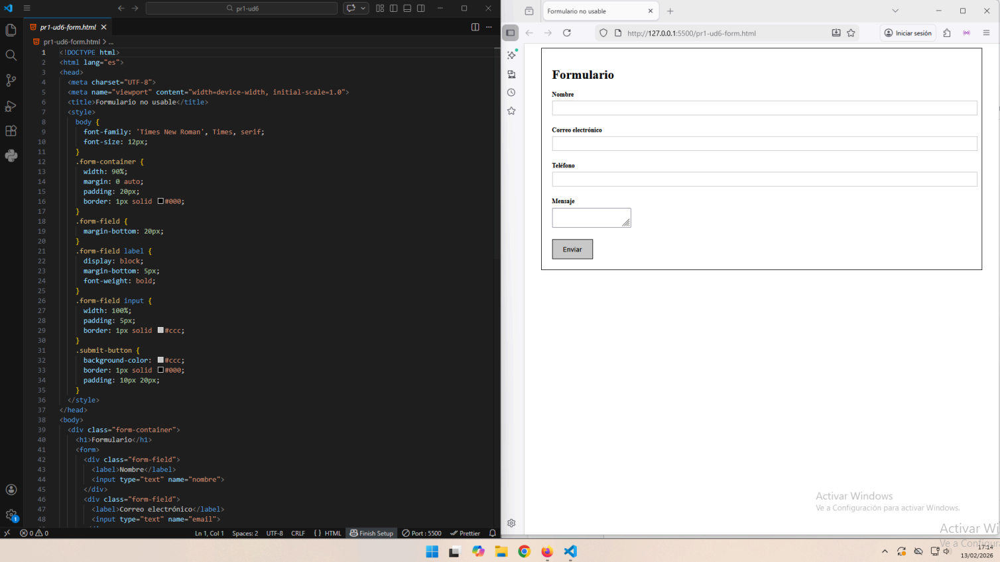

Después de la modificación:
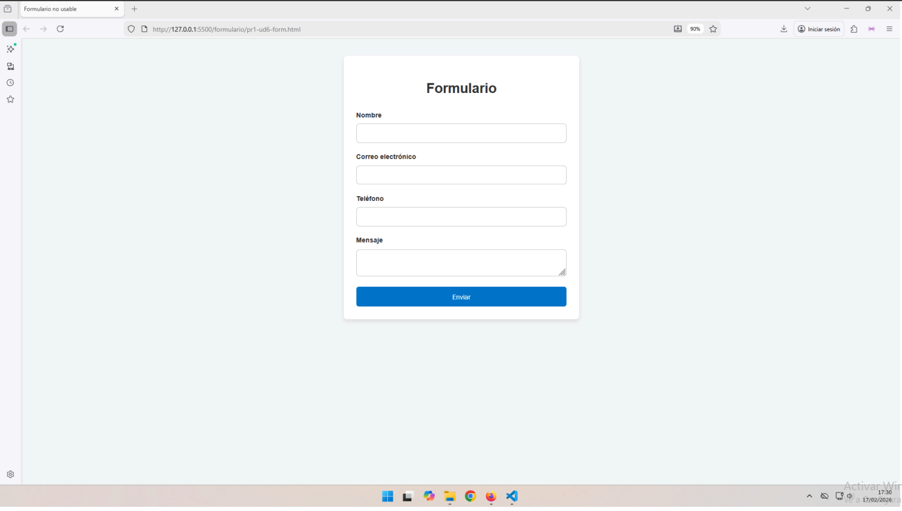
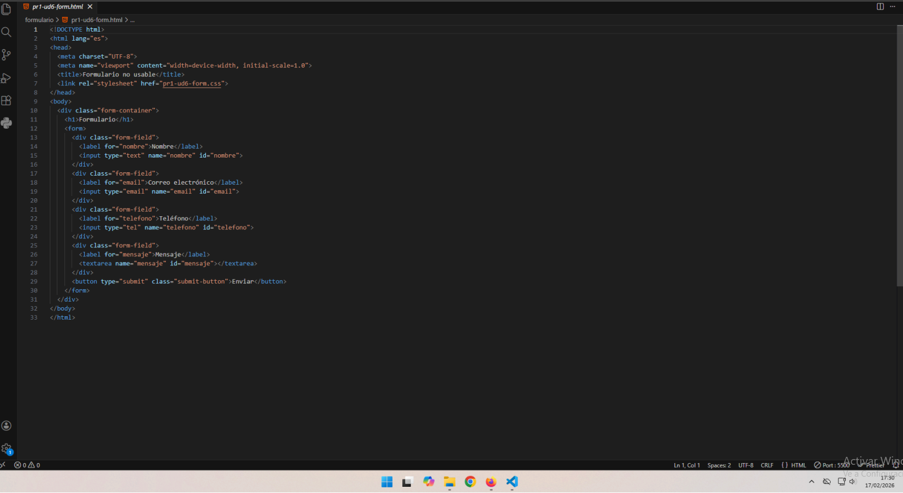
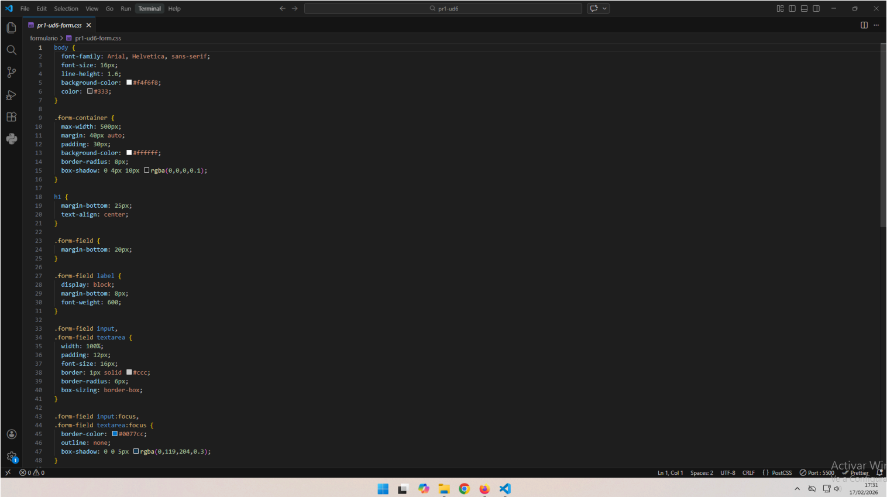
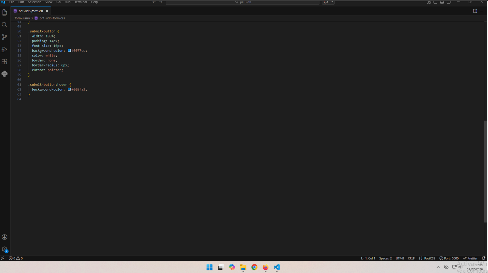
Modificaciones realizadas:
- Se ha cambiado la tipografía de Times New Roman a sans-serif y aumentado el tamaño del texto para facilitar la lectura.
- Se ha incrementado el interlineado para mejorar la legibilidad y reducir la fatiga visual.
- Se ha reorganizado la estructura del formulario mediante un contenedor centrado con márgenes y espaciado interno.
- Se ha aumentado el espaciado entre los campos para evitar saturación visual.
- Se han asociado correctamente las etiquetas (
label) con sus campos correspondientes.
- Se han utilizado tipos de campo adecuados (
email, tel, textarea).
- Se ha mejorado la visibilidad del foco mediante estilos
:focus.
- Se ha ampliado el área táctil de los campos y del botón de envío.
- Se ha destacado el botón de envío con un diseño claro y efecto
hover.
- Se ha implementado diseño responsive para dispositivos móviles.
pr1-ud6-img
Antes de la modificación:
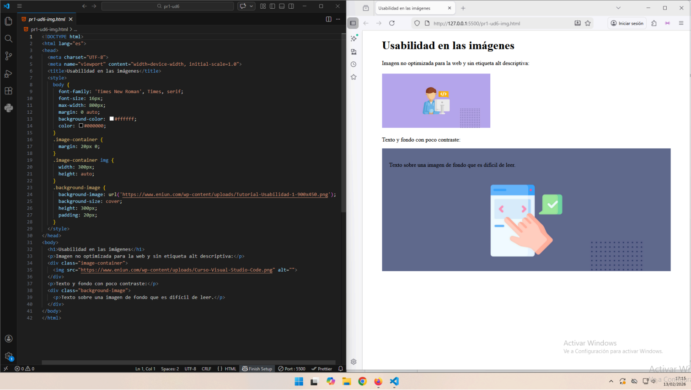
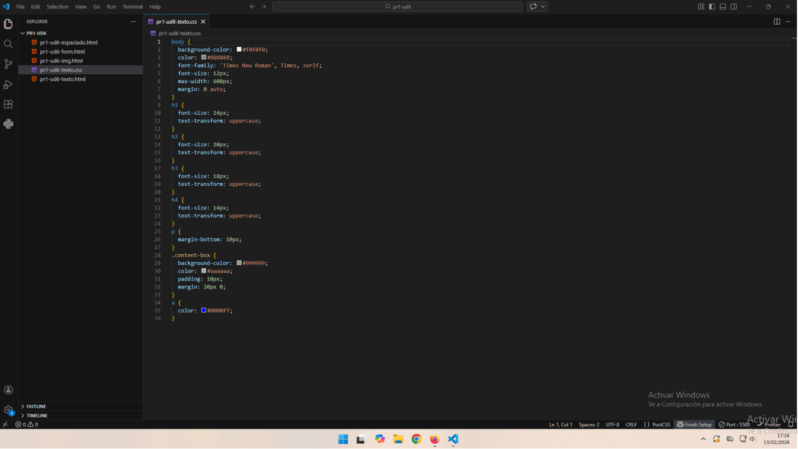
Después de la modificación:
 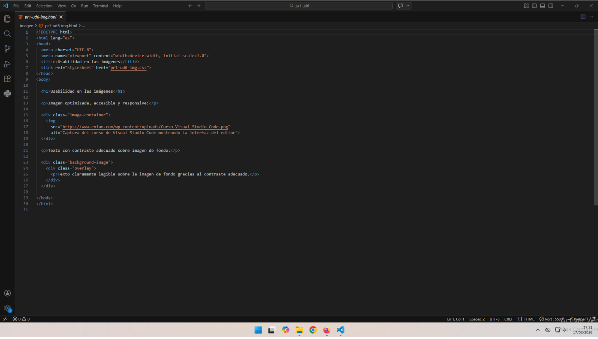
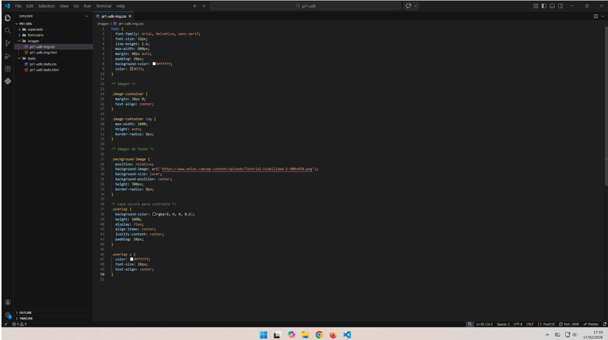
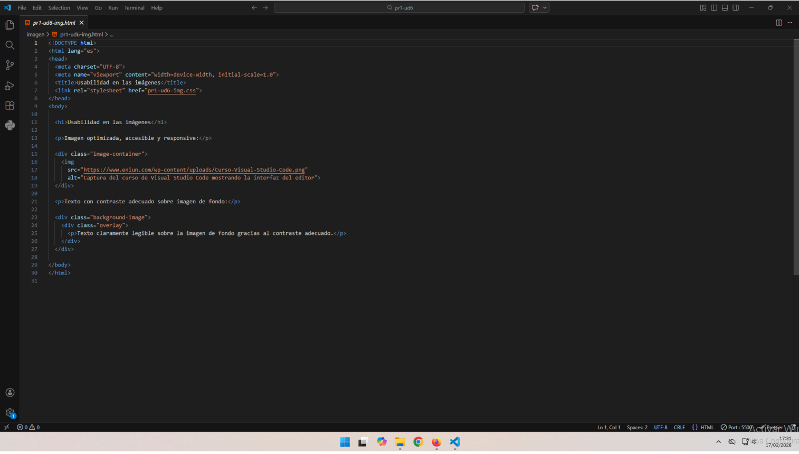
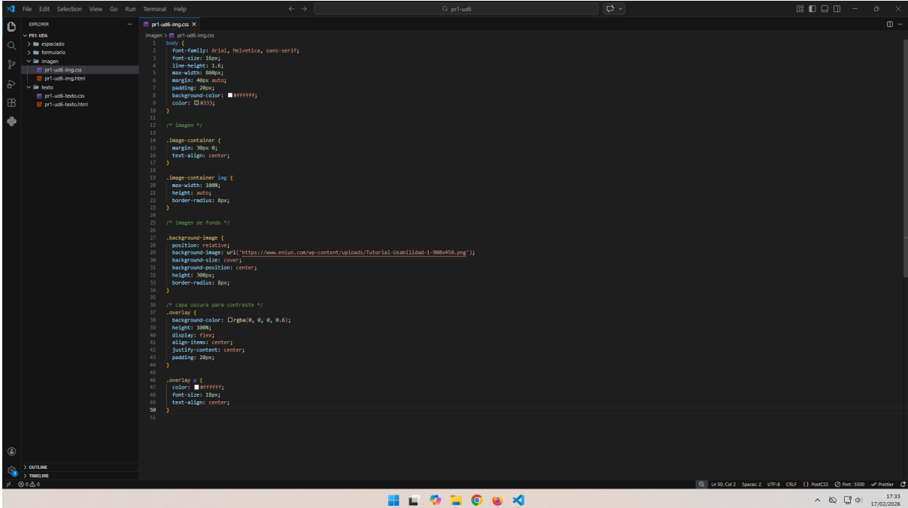
Modificaciones realizadas:
- Se han completado los atributos
alt para mejorar accesibilidad y SEO.
- Se han eliminado anchos fijos y utilizado medidas relativas para adaptación responsive.
- Se ha mejorado el contraste del texto sobre la imagen oscureciendo el fondo.
- Se ha organizado el contenido con etiquetas estructurales como
<header>, <main> y <section>.
- Se ha incrementado el interlineado para reducir la carga visual.
pr1-ud6-texto
Antes de la modificación:
Después de la modificación:
Modificaciones realizadas:
- Se ha simplificado el lenguaje técnico y reducido la longitud de los párrafos.
- Se ha sustituido “pinche aquí” por enlaces descriptivos que indican el destino.
- Se ha reducido el uso excesivo de mayúsculas en encabezados.
- Se ha corregido la jerarquía lógica de encabezados (
h1, h2, h3).
- Se han ajustado tamaños de texto para cumplir estándares de accesibilidad (14–16px mínimo).
- Se han estructurado correctamente listas con
<ul> y <li>.
- Se ha mejorado el contraste de colores para cumplir pautas de accesibilidad.
- Se ha cambiado la tipografía a sans-serif y aumentado el tamaño para mejorar la lectura.